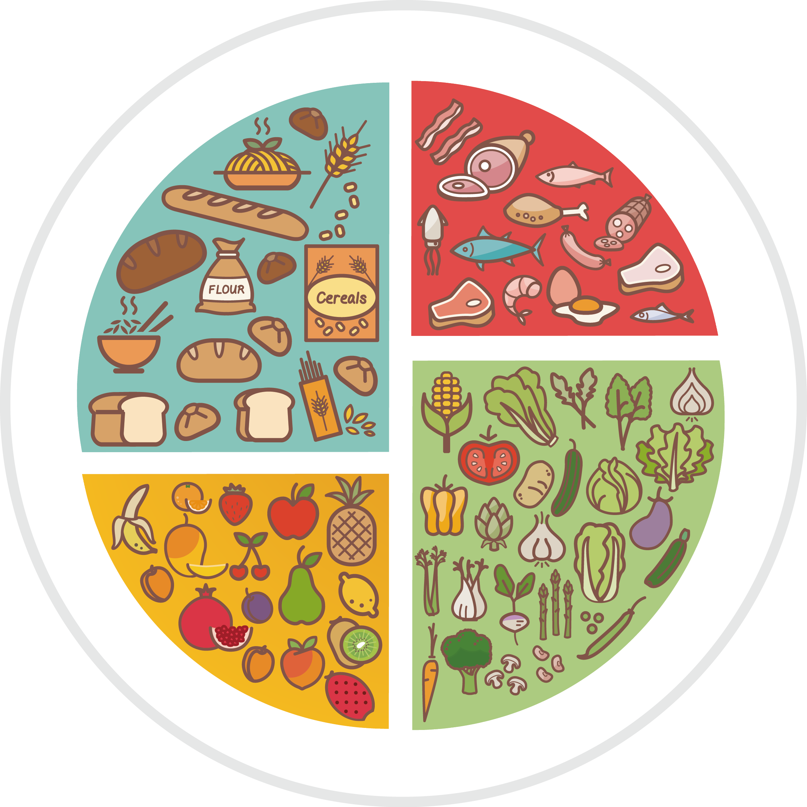
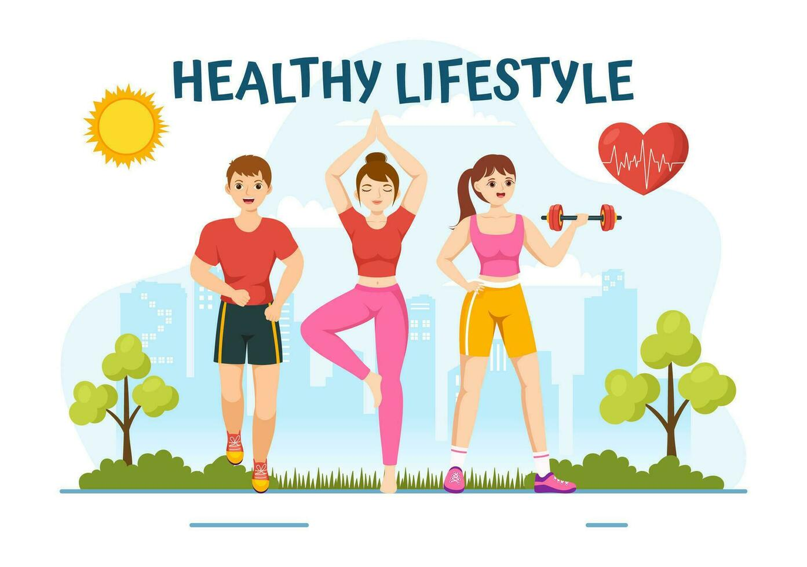

5 ways to improve your body image
I felt insecure about my body image for a very long time. I hated looking at myself in photographs because I only focused on my imperfections. The lack of confidence in my physical appearance made my social anxiety even worse. This affected my relationships with people and my mental health. I was fixated on other people's perception of me and as a result, I was not contempt with being myself. I believe that the first step to loving yourself is to accept all of your imperfections, let go of things that are not under your control and to work on everything that you can change in order to become the best version of yourself. Here I want to share five things that have improved my body image and helped me gain confidence in myself.
1. Skincare

I have suffered from bad acne ever since puberty so I tried to adopt a proper skincare routine for myself and since then I have tried many products and home remedies to try and improve my skin. These are the products that I am currently using which have helped clear my skin and improve its texture. Make sure to wash your hands thoroughly first.
CeraVe Hydrating Facial Cleanser - A cleanser is absolutely essential when you wash your face in the morning and before going to bed in order to get rid of dirt, oil and other debris. This one in particular does not irritate the skin and leaves it clean and hydrated.
CeraVe Renewing SA Cleanser - This cleanser is good for acne prone skin and I like to use this for exfoliation at night after using the hydrating cleanser. This product helps soften and smooth the skin.
ANUA Heartleaf 77% soothing toner - Apply this toner before any serums or moisturisers to help calm irritations, alleviate acne and balance natural oil and moisture levels
Skin1004 Madagascar Centella Asiatica 100 Ampoule - Apply during the day. It deeply replenishes moisture, soothes blemishes and redness, repairs acne scars and rejuvenates the skin.
COSRX Advanced Snail 92 All In One Cream - Moisturizer enriched with snail mucin. Gives the skin nourishment and moisture without oiliness. Apply both morning and night after serums.
Beauty of Joseon Relief Sun : Rice + Probiotics (SPF50+ PA++++) - Apply during the day. This is an organic sunscreen that is not sticky. Contains 30% rice extract and grain fermented extracts, it provides moisture and nourishment to the skin while protecting you from the sun.
Paula's Choice 2% BHA Liquid Exfoliant - Apply at night after toner. Visibly reduce pores & support the skin barrier for a healthy glow. It fights breakouts and blackheads and removes built-up dead skin cells
L’Oréal Paris Bright Reveal 10% Niacinamide + Amino Sulfonic Acid Serum - clinically proven to correct hyperpigmentation, even out skin tone and visibly fade all types of dark spots, from age spots to sunspots and post-acne marks. I usually like to apply this every other night.
2. Hair care

I started noticing some significant signs of hair loss around my 20s and I realised my hair was thinning out. My hair felt brittle to touch and it got very greasy after 1-2 days of not shampooing. So I booked a consultaion with Belgravia Centre and started taking the following medication and built a hair care routine to prevent further damage and try to recover what I lost. My hair has become fuller and healthier as a result of using these.
Minoxidil 5% + MPG 0.0125% lotion - Applied twice a day. Stimulates hair growth
Finasteride 1mg film-coated tablets - Take one per day. Decreases the amount of DHT which leads to increased hair regrowth and slower hair loss
Aveeno Volumising+ Fresh Greens Shampoo - Sulfate free shampoo which does not strip away the hair's natural oils. Helps fine, thin hair appear thicker and fuller while soothing the scalp.
Pantene Molecular Bond Repair Hair Conditioner - Repairs damage caused by styling and blow drying. Designed to protect and strengthen hair bonds for healthy-looking hair
TRESemmé Heat Defence Spray - Helps protect your hair from damage caused by heat styling tools. Spray on to your hair before blow-drying.
Handcraft Blends Fractionated Coconut Oil - Adds moisture and nourishes hair. Massage into hair and scalp beore taking a shower.
3. Nutrition
After starting university and living on my own, I had to learn how to cook by myself. Therefore I needed a diet which not only gives me all the essential nutrients but also helps build muscle and achieve my health and fitness goals.
A high protein intake is crucial for muscle growth and repair. I eat three to six eggs everyday, usually by making an omelette. I alternate between chicken and beef recipes and in my experience I have found it easy to meal prep by cooking a large pot of fried rice with vegetables(carrots, broccoli, peppers) and chicken breast cut into mini fillets. I like to get beef mince because it is the most convenient, and cook a large pot of Japanese curry with rice which is super simple and only requires a few ingredients like onion, carrots, potato, curry powder and beef mince.
It is also important to incorporate fruits and vegetables into your diet so I eat a fruit salad with greek yogurt. And for vegetables I usually stir fry spinach or broccoli.
As a university student with a busy schedule, I think this is a simple meal plean which is very nutritious and healthy but also relatively low-effort.
4. Exercise
I had always been fairly skinny. I found it very hard to gain weight due to my high metabolism. So getting into the gym has been pivotal in my journey of self improvement. I lift weights and follow an upper-lower training split into five days with 2 days of rest. This has helped me gain muscle, make my frame look bigger, increase my strength and endurance, helped me achieve a more defined physique and improved my self-confidence significantly.
5. Lifestyle
Your physical appearance can be a mirror of your lifestyle. There are several changes you can make to your daily life which can improve your body image and mental wellbeing in the long-run.
Sleep - It is extremely important to get at least 8 hours of sleep everyday. It gets rid of eye bags, and tiredness. It also helps prevent acne and maintain good skin and hair health. You will look and feel more energetic while avoiding a myriad of health problems.
Eat a clean and balanced diet - This supports healthy weight management and boosts the immunse system. Promotes healthy skin, hair and nails.
Exercise - Improve both physical and mental health. It is important to do some form of cardio regularly to strengthen the heart and improve circulation, reducing the risk of heart disease and high blood pressure
Grooming and hygiene - Maintain good hygiene which helps you look your best and makes people feel more comfortable around you when you look clean and smell good.
Reduce screen time - Prolonged screen use can lead to poor posture, increases stress and anxiety, and reduce your attention span. By reducing your screen time you can prevent these problems, and also create healthier habits instead like going out for a walk, journaling or reading books which encourages mindfulness.